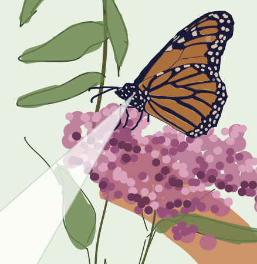

|
Clara Wong-Fannjiang
I'm a Senior Machine Learning Scientist at Genentech in South San Francisco, where I am part of the Frontier Research team within Prescient Design.
My research works toward enabling trustworthy scientific inquiry and decision-making using machine learning, with a current focus on uncertainty quantification methods.
I received my Ph.D. in Electrical Engineering and Computer Sciences from UC Berkeley in August 2023, where I was advised by Michael I. Jordan and Jennifer Listgarten as an NSF Graduate Research Fellow.
I also spent a summer working with Nikhil Naik and Ali Madani at Salesforce Research.
Prior to Berkeley, I conducted marine biology fieldwork with Kakani Katija at the Monterey Bay Aquarium Research Insitute and worked with David Sussillo as a Google AI Resident.
I received my B.S. in Computer Science in 2016 from Stanford University, where I benefited from the guidance of Stephen Boyd, Coraline Rinn Iordan, and Fei Fei Li.
Beyond research, I am an avid hiker, fan of women's artistic gymnastics and aroids, and proud mom to an extraordinary son.
Email ·
CV ·
Scholar
|
|
Research
I am broadly interested in the question of how to make trustworthy machine learning-guided scientific conclusions and decisions.
My current work tackles this question through the lens of uncertainty quantification methods, and is particularly motivated by problems in drug discovery and clinical decision-making.
Some highlighted work is below, where (α-β) denotes alphabetical ordering and * denotes equal contribution.
|
|
|
Reliable algorithm selection for machine learning-guided design
Clara Fannjiang and
Ji Won Park
preprint, 2025
arXiv
How can we anticipate whether an algorithm will be successful for a machine learning-guided design task?
We use prediction-powered inference techniques to reliably forecast characteristics of the distribution of designs
that will be produced by an algorithm, enabling the selection of algorithms that will be successful (if there are any) with high-probability guarantees.
|
|
|
Optimal trade-off control in machine learning–based library design, with application to adeno-associated virus (AAV) for gene therapy
Danqing Zhu*,
David H. Brookes*,
Akosua Busia*,
Ana Carneiro,
Clara Fannjiang,
Galina Popova,
David Shin,
Kevin C. Donohue,
Li F. Lin,
Zachary M. Miller,
Evan R. Williams,
Edward F. Chang,
Tomasz J. Nowakowski,
Jennifer Listgarten, and
David V. Schaffer
Science Advances, 2024
Sci. Adv. (open access)
·
bioRxiv
·
BibTeX
A diverse set of designed objects enables a practitioner to hedge against unknown future desiderata.
We develop a machine learning-guided design method that navigates a trade-off between design diversity and achieving desirable predicted values,
and apply it to the design of diverse AAV capsids with high packaging efficiency.
|
|
|
Is novelty predictable?
Clara Fannjiang and
Jennifer Listgarten
Cold Spring Harbor Perspectives in Biology, 2023
CSHL
·
PDF
·
arXiv
·
BibTeX
A discussion of considerations when using machine learning-based predictions to guide the design of novel objects, which by definition differ from
the training data and are therefore particularly prone to prediction error.
|
|
|
Prediction-powered inference
(α-β)
Anastasios N. Angelopoulos,
Stephen Bates,
Clara Fannjiang,
Michael I. Jordan, and
Tijana Zrnic
Science, 2023
Science
·
PDF
·
arXiv
·
code
·
BibTeX
We develop a framework for performing valid statistical inference—constructing confidence sets and p-values—when gold-standard data
is supplemented with predictions from any predictor, machine learning-based or otherwise.
|
|
|
Conformal prediction under feedback covariate shift for biomolecular design
Clara Fannjiang,
Stephen Bates,
Anastasios N. Angelopoulos,
Jennifer Listgarten, and
Michael I. Jordan
Proceedings of the National Academy of Science, 2022
PNAS (open access)
·
arXiv
·
code
·
BibTeX
We characterize feedback covariate shift, a type of distribution shift
in which the test and training data are dependent: the former is determined by the latter,
such as in machine learning-guided design.
We generalize conformal prediction to the feedback covariate shift setting.
|
|
|
Learning protein fitness models from evolutionary and assay-labelled data
Chloe Hsu,
Hunter Nisonoff,
Clara Fannjiang and
Jennifer Listgarten
Nature Biotechnology, 2022
Nat. Biotech.
·
PDF
·
bioRxiv
·
code
·
BibTeX
Simple baselines outperform fine-tuned protein language models on protein fitness prediction.
|
|
|
Autofocused oracles for model-based design
Clara Fannjiang and
Jennifer Listgarten
Neural Information Processing Systems, 2020
NeurIPS (open access)
·
arXiv
·
code
·
BibTeX
Given fixed training data, algorithms for machine learning-guided design often consult a fixed predictive model.
We propose instead retraining the predictive model as such algorithms proceed, on the same training data
but carefully reweighted to reflect where the algorithm is currently "focused" in input space.
|
|
|
Augmenting biologging with supervised machine learning to study in situ behavior of the medusa Chrysaora fuscescens
Clara Fannjiang,
T. Aran Mooney,
Seth Cones,
David Mann,
K. Alex Shorter, and
Kakani Katija
Journal of Experimental Biology, 2019
JEB (open access)
·
jellyfish footage
·
BibTeX
A spunky first step toward using machine learning to make sense of wild jellyfish telemetry collected in the Monterey Bay.
|
Select Talks
Simons Institute Workshop on AI≡Science: Strengthening the Bond Between the Sciences and AI, June 14, 2024 (recorded).
Machine Learning for Health Care and Life Sciences Workshop, ETH AI Center, November 30, 2023.
Microbiology Society Annual Conference, April 17, 2023.
EPFL Physics of Living Systems Seminar Series, November 18, 2022.
Machine Learning for Protein Engineering Seminar Series, October 18, 2022 (recorded).
AIDD Summer School on Advanced Machine Learning for Drug Disovery, May 13, 2022.
UC Berkeley EECS Ph.D. Dissertation Talk, May 10, 2023 (recorded).
|
|

|
Monarch McFly: Back to the Evolutionary Future
Clara Fannjiang
Berkeley Science Review, Spring 2020
BSR
·
PDF
Pop science piece on work by Karageorgi et al. (2019). Artwork by Alison Nguyen.
|
|
|
Filling in the Species Gap
Clara Fannjiang
Berkeley Science Review, Fall 2019
BSR
·
PDF
Pop science piece on Sara A. Stoudt's and Kelly Iknayan's work in statistical modeling in ecology. Artwork by Alison Nguyen.
|
|
|
|
|
{kind=link}